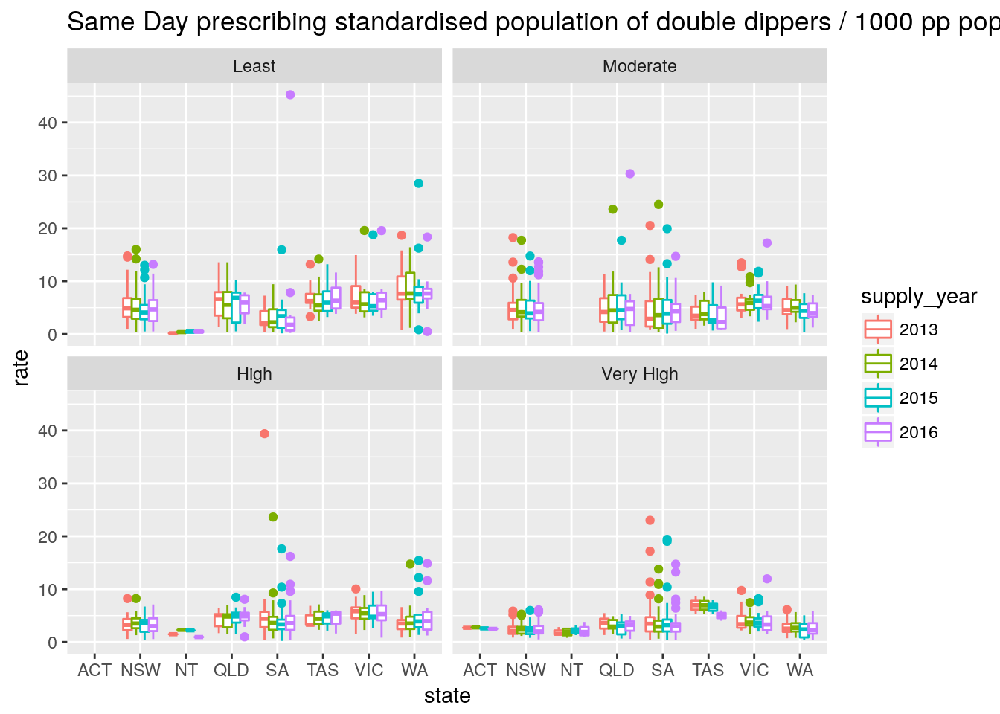

Population Exploration,rf
Mofi Islam and Dennis Wollersheim
2018-04-30
Last updated: 2018-11-01
workflowr checks: (Click a bullet for more information)-
✔ R Markdown file: up-to-date
Great! Since the R Markdown file has been committed to the Git repository, you know the exact version of the code that produced these results.
-
✔ Environment: empty
Great job! The global environment was empty. Objects defined in the global environment can affect the analysis in your R Markdown file in unknown ways. For reproduciblity it’s best to always run the code in an empty environment.
-
✔ Seed:
set.seed(20180719)The command
set.seed(20180719)was run prior to running the code in the R Markdown file. Setting a seed ensures that any results that rely on randomness, e.g. subsampling or permutations, are reproducible. -
✔ Session information: recorded
Great job! Recording the operating system, R version, and package versions is critical for reproducibility.
-
Great! You are using Git for version control. Tracking code development and connecting the code version to the results is critical for reproducibility. The version displayed above was the version of the Git repository at the time these results were generated.✔ Repository version: 132d7c2
Note that you need to be careful to ensure that all relevant files for the analysis have been committed to Git prior to generating the results (you can usewflow_publishorwflow_git_commit). workflowr only checks the R Markdown file, but you know if there are other scripts or data files that it depends on. Below is the status of the Git repository when the results were generated:
Note that any generated files, e.g. HTML, png, CSS, etc., are not included in this status report because it is ok for generated content to have uncommitted changes.Ignored files: Ignored: data/cache/ Untracked files: Untracked: a.sql Untracked: analysis/population_exploration.Rmd Untracked: lib/findOverlap.R Untracked: |xc Unstaged changes: Modified: analysis/analysis.v2.Rmd Modified: analysis/mofi_request_sameDay.Rmd Modified: lib/functions.R Modified: lib/generate_data_frames.R Modified: lib/get_data.R Modified: lib/standardisation.R



Session information
R version 3.4.4 (2018-03-15)
Platform: x86_64-pc-linux-gnu (64-bit)
Running under: Ubuntu 17.10
Matrix products: default
BLAS: /usr/lib/x86_64-linux-gnu/openblas/libblas.so.3
LAPACK: /usr/lib/x86_64-linux-gnu/libopenblasp-r0.2.20.so
locale:
[1] LC_CTYPE=en_AU.UTF-8 LC_NUMERIC=C LC_TIME=en_AU.UTF-8 LC_COLLATE=en_AU.UTF-8 LC_MONETARY=en_AU.UTF-8 LC_MESSAGES=en_AU.UTF-8 LC_PAPER=en_AU.UTF-8
[8] LC_NAME=C LC_ADDRESS=C LC_TELEPHONE=C LC_MEASUREMENT=en_AU.UTF-8 LC_IDENTIFICATION=C
attached base packages:
[1] grid stats4 parallel stats graphics grDevices utils datasets methods base
other attached packages:
[1] bindrcpp_0.2.2 keyring_1.1.0 RPostgreSQL_0.6-2 DBI_1.0.0 tricolore_1.0.3 ggtern_2.2.1 tmaptools_2.0 tmap_2.0
[9] forcats_0.3.0 dplyr_0.7.6 purrr_0.2.5 readr_1.1.1 tidyr_0.8.1 tibble_1.4.2 ggplot2_2.2.1 tidyverse_1.2.1
[17] multidplyr_0.0.0.9000 IRanges_2.12.0 S4Vectors_0.16.0 BiocGenerics_0.24.0 fuzzyjoin_0.1.4 DataCache_0.9 wrapr_1.5.1 readstata13_0.9.2
[25] lubridate_1.7.4 knitr_1.20 stringr_1.3.1 magrittr_1.5 seas_0.5-2 MASS_7.3-50 workflowr_1.1.1 nvimcom_0.9-75
loaded via a namespace (and not attached):
[1] readxl_1.1.0 backports_1.1.2 lwgeom_0.1-4 plyr_1.8.4 lazyeval_0.2.1 sp_1.3-1 jqr_1.0.0 crosstalk_1.0.0 leaflet_2.0.1
[10] geojsonlint_0.2.0 digest_0.6.15 foreach_1.4.4 htmltools_0.3.6 modelr_0.1.2 bayesm_3.1-0.1 R.utils_2.6.0 colorspace_1.3-2 rvest_0.3.2
[19] jsonvalidate_1.0.0 haven_1.1.2 rgdal_1.3-3 crayon_1.3.4 jsonlite_1.5 bindr_0.1.1 iterators_1.0.10 glue_1.3.0 gtable_0.2.0
[28] webshot_0.5.0 compositions_1.40-2 V8_1.5 DEoptimR_1.0-8 scales_1.0.0 Rcpp_0.12.19 viridisLite_0.3.0 xtable_1.8-2 spData_0.2.9.0
[37] units_0.6-0 foreign_0.8-70 latex2exp_0.4.0 htmlwidgets_1.2 httr_1.3.1 RColorBrewer_1.1-2 pkgconfig_2.0.1 XML_3.98-1.12 R.methodsS3_1.7.1
[46] reshape2_1.4.3 labeling_0.3 tidyselect_0.2.4 rlang_0.2.2 later_0.7.3 munsell_0.5.0 cellranger_1.1.0 tools_3.4.4 cli_1.0.0
[55] broom_0.5.0 evaluate_0.10.1 yaml_2.1.19 robustbase_0.93-1.1 satellite_1.0.1 nlme_3.1-137 whisker_0.3-2 mime_0.5 R.oo_1.22.0
[64] xml2_1.2.0 rmapshaper_0.4.0 compiler_3.4.4 rstudioapi_0.7 curl_3.2 png_0.1-7 e1071_1.6-8 stringi_1.2.3 rgeos_0.3-28
[73] lattice_0.20-35 classInt_0.2-3 tensorA_0.36.1 pillar_1.3.0 maptools_0.9-2 geojsonio_0.6.0 raster_2.6-7 mapview_2.4.0 httpuv_1.4.5
[82] R6_2.3.0 promises_1.0.1 KernSmooth_2.23-15 gridExtra_2.3 codetools_0.2-15 gdalUtils_2.0.1.14 dichromat_2.0-0 boot_1.3-20 energy_1.7-4
[91] assertthat_0.2.0 proto_1.0.0 rprojroot_1.3-2 hms_0.4.2 geojson_0.2.0 class_7.3-14 rmarkdown_1.10 git2r_0.23.0 sf_0.6-3
[100] shiny_1.1.0 base64enc_0.1-3 This reproducible R Markdown analysis was created with workflowr 1.1.1